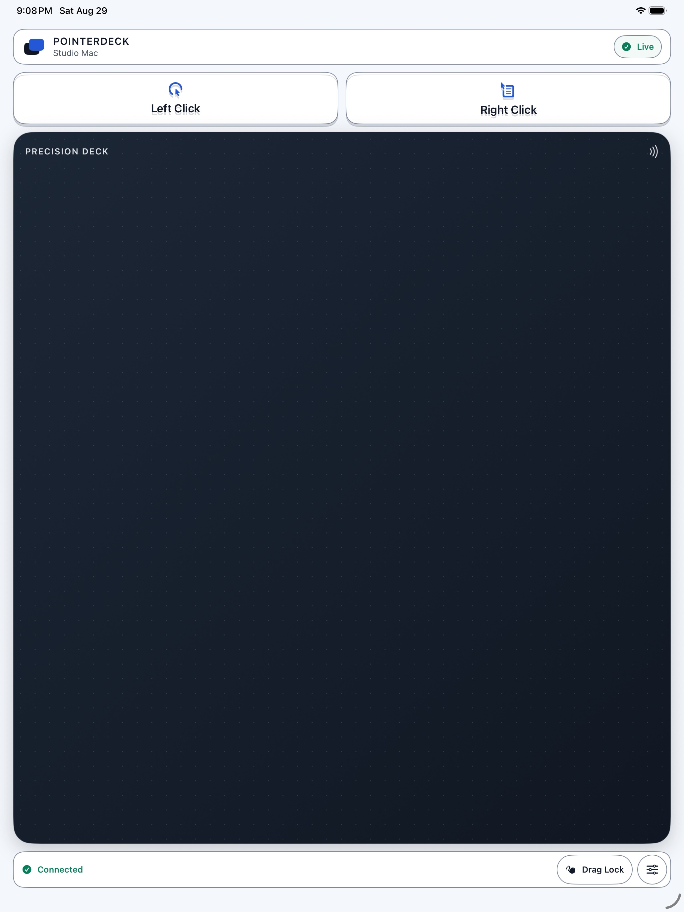

A practical PointerDeck guide
Use your iPhone or iPad as a mouse for Mac.
PointerDeck turns your touch screen into a trackpad for your Mac. Move the pointer, click, scroll, and drag without streaming your desktop to another screen.
The iPhone/iPad app and the required Mac Receiver are both free. There is no PointerDeck account, advertising, in-app purchase, or subscription.
What you need
- An iPhone or iPad running iOS/iPadOS 17 or later.
- A Mac running macOS 14 or later.
- Both devices on the same reachable local network, such as your home Wi-Fi.
- Local Network permission for PointerDeck and Accessibility permission for the Mac Receiver.
PointerDeck is currently unavailable in EU App Store storefronts.
1. Install the two apps
On your iPhone or iPad, download PointerDeck: Trackpad for Mac from the App Store.
On your Mac, download the free PointerDeck Receiver. Open the ZIP, move the receiver to Applications, and open it normally. Keep the receiver running while you use the trackpad.
2. Allow local control
Connect both devices to the same private local network. Allow Local Network access when prompted, so the apps can discover and communicate with each other.
On the Mac, open System Settings → Privacy & Security → Accessibility and enable the PointerDeck Receiver installed in Applications. This lets the receiver move the pointer and send clicks, scrolls, and drags.
If you previously declined local-network access, check Settings → Privacy & Security → Local Network on your iPhone/iPad. Check the corresponding permission on the Mac too, if shown.
3. Pair your Mac once
- In the Mac Receiver, create a Connection PIN with 8–12 digits and at least five different digits. Avoid repeated blocks and ascending or descending sequences.
- Choose Add Device on the Mac. This opens pairing for up to two minutes.
- Open PointerDeck on your iPhone or iPad, select your nearby Mac, and enter its PIN while pairing is open.
- Wait for Connected, then try moving one finger across the trackpad.
Keep the PIN private. After pairing, PointerDeck stores a separate trusted-device credential for later reconnection; you do not need to leave Add Device open.
4. Move, click, scroll, and drag
- Move: slide one finger across the trackpad.
- Click: use the Left Click and Right Click buttons above it. Tap-to-click is also available.
- Scroll: slide two fingers across the trackpad.
- Drag: turn on Drag Lock, move the item, then turn Drag Lock off to release it.
- Adjust the feel: open Trackpad Settings to change movement or scroll speed, choose Natural or Reversed scrolling, or use a left-handed layout.
An iPad gives you a larger touch surface with the same core controls. You still look at your Mac’s screen: PointerDeck does not display a remote desktop.

See the controls in action
Watch the 42-second animated PointerDeck walkthrough on YouTube. It uses real app screens with illustrated devices and animated gestures; it is an overview, not a recording of a live connection.
5. Reconnect next time
After the first pairing, PointerDeck can reconnect to your trusted Mac when both apps are open and the devices can reach each other. If you lock your phone, reopen PointerDeck when you want to continue. After restarting your Mac, make sure the receiver is running again.
This is not continuous background control while the phone is locked, and it does not work through an unreachable network. If trust has been revoked or replaced, pair again.
6. If something does not work
My Mac does not appear
Confirm that the receiver is open, both devices are on the same reachable local network, and Local Network access is allowed. Guest, hotel, public, and corporate Wi-Fi may isolate devices even when the network name matches. Try a private network you control. Do not forward router ports.
It says Connected, but the pointer does not move
Check Accessibility permission for the exact PointerDeck Receiver in Applications. Close duplicate or older receiver copies, then reopen that installed copy.
Scrolling goes the wrong way
Choose Natural or Reversed in Trackpad Settings. If you also changed the Mac Receiver’s incoming-scroll setting, make sure the two settings are not reversing each other.
My saved Mac will not reconnect
First reopen both apps and check the network. If the trusted credential was revoked or replaced, use the option to forget the saved Mac in PointerDeck on iPhone/iPad, open Add Device on the Mac, and pair with the current PIN.
For more help, visit PointerDeck Support or email elaymecht@gmail.com. Never send a live PIN or other secrets.
Ready to try it?
Install both free apps, pair on your local network, and use the touch screen you already have.